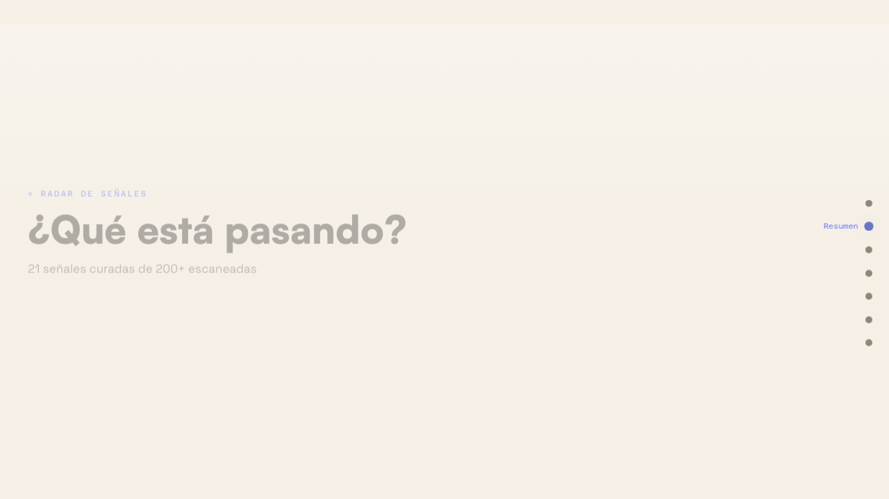

Research → Signals → Graph
→ Ontology → Sim → Report → QC
Every simulation runs the same 7-stage pipeline. Each stage has a hard stop — if any stage fails validation, the pipeline halts and reports exactly why. No garbage-in, garbage-out.
Actors, regulations,
signals — in one graph.
The knowledge graph is the brain of every simulation. It stores actors (CMF, Banco de Chile, fintech associations), regulations (Basel III, Open Finance, AML reform), signals (news, official statements, market moves), and their relationships (influences, opposes, depends-on, monitors).
The 3D visualization in the Vue frontend renders this graph interactively — you can orbit, filter by node type, click a node to expand its relationships, and see how the simulation changes the graph state over time.

3D force-directed knowledge graph — Vue 3 + D3.js + Three.js — nodes = actors, regulations, signals
18 sections.
Editorial precision.
The final output is a fully designed Astro static site. Typography: Satoshi 900 for display, Instrument Serif italic for editorial callouts — the same visual language as a high-end consulting deliverable.
Every section was designed to answer a specific question a strategist would have: What's happening? (Radar) → Why now? (Convergences) → Who moves? (Actor network) → What happens next? (Scenarios) → What do we do? (Actions)

Report cover — Banca Chilena · Bancos Sistémicos · Simulación Estratégica

"En 2 minutos" — Instrument Serif editorial italic · executive summary

Radar de Señales — 21 signals curated from 200+ scanned · dot-nav sidebar
From 2.5/5 to 4.72/5.
The first 3 simulations scored 2.5/5. Hallucinated actors, broken accents, mismatched signal IDs, generic outputs. I built a 4-service QC pipeline that runs automatically after every report:
- Preflight check — validates pipeline integrity (EventBridge present, paths exist, entities grounded)
- Rubric evaluation — 10-dimension 1–5 scale scoring (specificity, sourcing, actionability…)
- Auto-improvement — rewrites sections scoring below 4.0 with targeted prompts
- Audit trail — logs every score change, every rewrite, every flag
How the pieces
fit together.
Frontend (Vue 3)
- Vue 3 + Vite — SPA wizard UI
- D3.js — force layout engine
- Three.js — 3D rendering layer
- 5-step wizard (Graph → Sim → Report)
- ToastContainer — live pipeline logs
Backend (Flask 3)
- Flask 3 — REST API + WebSocket
- Neo4j — knowledge graph storage
- AWS Bedrock — Claude Sonnet calls
- local_graph_adapter — $0 graph infra
- Docker — full local stack